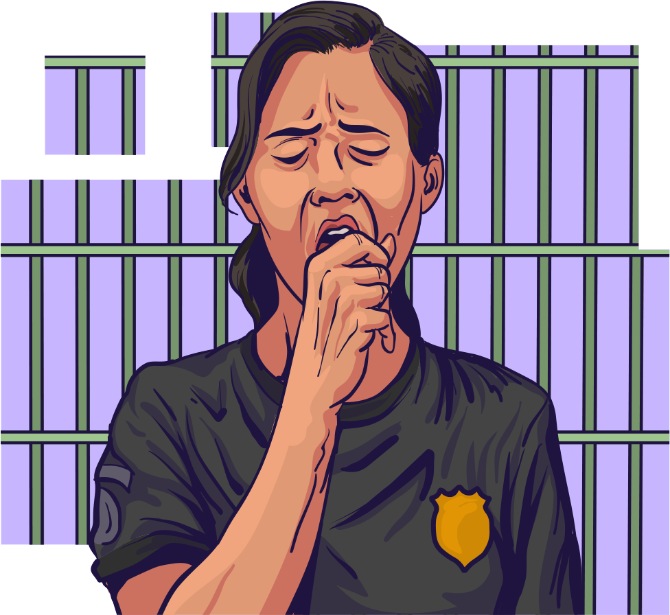

O que caracteriza a depressão?
A depressão é uma doença complexa que afeta, predominantemente, o humor. Acomete a pessoa em sua totalidade, provocando grande sensação de desconforto e sofrimento. As pessoas com depressão não conseguem desfrutar dos prazeres normais da vida por experimentarem sentimentos persistentes de inadequação, tristeza profunda ou irritação, desamparo e pessimismo exagerado.
Navegue pelo carrossel para visualizar outras características.


Dificuldade na fluidez e organização das ideias, que se reflete no baixo desempenho cognitivo de memória, concentração e raciocínio. A pessoa não consegue, por exemplo, realizar contas.
A doença distorce negativamente a maneira habitual como a pessoa interpreta os acontecimentos passados, presentes e futuros. Esse julgamento enviesado da realidade produz pensamento de culpa, pessimismo, autoacusação, morte, incurabilidade, entre outros, que geralmente são conteúdos muito dolorosos.
Cansaço, fadiga, agitação ou lentificação geral, insônia ou sono excessivo, perda ou ganho de peso e diminuição dos interesses.
Os estímulos são percebidos com menos intensidade, o colorido se perde, a comida parece não ter gosto, os cheiros são pouco percebidos.
Dificuldade de modificar o estado de tristeza, independentemente de fatores externos, mesmo os positivos. Desleixo e descuido com a aparência e os cuidados pessoais, além de deixar de cuidar da organização da casa ou do local onde trabalha.